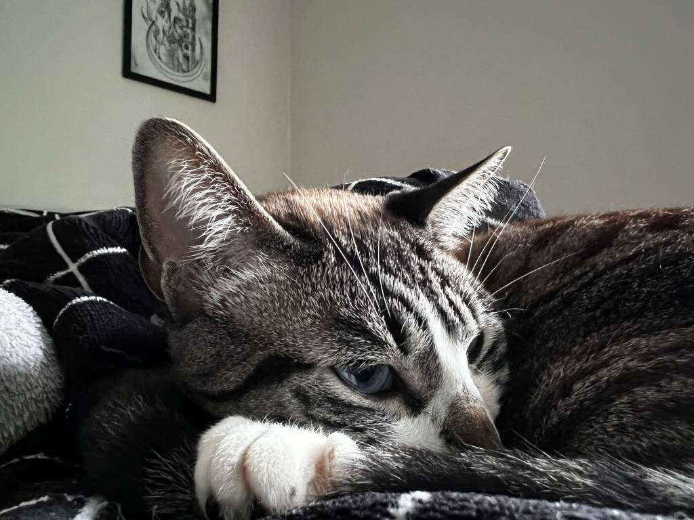

Como a Apple pensou a câmera do iPhone 13 para continuar sempre atual
Em entrevista exclusiva, executivos da Apple contam como fazem para manter a tecnologia das câmeras dos iPhones fáceis de usar e relevantes para todos os usuários
Essa é uma daquelas histórias que muita gente já ouviu ao menos uma parte, mas é sempre surpreendente mesmo assim. A Kodak inventou a câmera digital ainda na década de 1970 e guardou o segredo com medo de que a tecnologia destruísse seu lucrativo negócio de câmeras a filme. Passam-se algumas décadas e a companhia saiu de dois terços do mercado mundial de fotografia, em 1996, para a falência, em 2012: falhou em manter o ritmo e incorporar a tecnologia que ela própria havia inventado.
Com a ascensão dos smartphones, as câmeras deixaram de ser um artigo de luxo, reservado a aficionados, ou aquele objeto que pertencia a família, dedicado à preservação da memória. De 2008 para cá, a regra passou a ser que a melhor câmera é aquela que está no seu bolso o tempo inteiro. E, nesse cenário, a Apple passou a ser a fabricante das câmeras mais utilizadas no mundo.
Nesta sexta-feira, 22, a empresa passa a vender os novos modelos iPhone 13 no Brasil, que contam com uma câmera renovada, ainda mais potente e completa que a do ano anterior, uma preocupação da Apple para continuar sendo relevante em um mundo cada vez mais dependente de imagens e vídeos.
Para acompanhar o ritmo frenético, a Apple precisou também reinventar a maneira como as câmeras funcionam. O uso delas precisa ser, ao mesmo tempo, simples — para que sejam acessíveis a todos — e complexo — para que mesmo os usuários mais experientes e criativos possam se expressar através das lentes e software da Apple.

Se as câmeras do passado eram objetos mais mecânicos, em termos de ajuste de foco, distância focal e velocidade do obturador para que a luz pudesse ser capturada à perfeição, a Apple revolucionou parte do processo com implementações de software. Hoje, o celular é capaz de lançar mão de tecnologias como Deep Fusion, que realiza uma série de fotos em alta velocidade (algumas antes mesmo do clique) e usa a inteligência artificial de alto nível do próprio aparelho para combiná-las em uma imagem esteticamente alinhada ao resultado almejado por quem apertou o botão.
Esse novo panorama de fotografia computacional exige uma sinergia grande entre os sistemas de software do iPhone e de hardware das câmeras. Especialmente a cada nova geração do aparelho, que apresenta ainda mais novidades nesse sentido. O Deep Fusion foi introduzido pela Apple há dois anos, no iPhone 11; as câmeras duplas chegaram no iPhone X e com elas a possibilidade de modo retrato e desfoque do fundo. Outras soluções vieram na sequência como três câmeras e sensores de luminosidade. Este ano, os novos modelos têm modo cinemático, zoom óptico de até 3 vezes e a capacidade de fotografar objetos com muita proximidade, conhecido como macro.
Raras vezes a Apple abre as cortinas e dá detalhes de como funcionam seus produtos por dentro. Mas, por conta da chegada do iPhone 13 ao Brasil, a empresa concedeu uma entrevista exclusiva com Jon McCormack, vice-presidente de engenharia de software de câmera, Graham Townsend, vice-presidente de engenharia de hardware de câmera, e Louis Dudley, gerente de produto do iPhone.
Junto de uma equipe de 800 pessoas e anos de trabalho, McCormack e Townsend são os responsáveis por fazer a câmera dos iPhones serem o que os usuários precisam que elas sejam. São eles que pensam nos sensores para captação de luz e até na simplicidade da interface de uso, que permite apenas tirar o aparelho do bolso, bater uma foto, e não ter que se preocupar muito com aspectos técnicos.
“Nós podemos olhar para mais de 100 anos de história da fotografia e cinematografia e entender como fotógrafos e cineastas usaram as ferramentas disponíveis para criar grandes imagens e filmes. A pergunta que nos fazemos é como podemos trazer isso para todo mundo”, afirmou McCormack.
Segundo o executivo, a inspiração do passado serve para uma interação com diferentes áreas da tecnologia. Perceber o trabalho que alguém faz ajustando o foco na indústria do cinema é um detalhe que pode virar uma função para usuários de iPhone. A partir daí, as equipes de software e hardware trabalham em conjunto para entender como implementar isso através de algoritmos, processamento computacional e equipamento, sejam lentes ou sensores.
De acordo com McCormack, a capacidade de computação da linha iPhone 13, que conta com os novos os chips A15 Bionic, permite que a empresa consiga aplicar o legado do cinema à tecnologia computacional do modo cinemático dos novos iPhone. “A segmentação de vídeo é tão mais complexa. É preciso capturar a profundidade em uma cena em tempo real em cada um dos frames, algo que conseguimos com a computação neural do A15 Bionic”, disse.
“É interessante como a abordagem pelo lado do hardware mudou para refletir isso. O hardware é a fundação, é sobre capturar a maior quantidade de informação. Nós precisamos pensar como o software vai usar essas informações mais para frente e isso é parte dessa cooperação”, afirma Townsend, dando como exemplo a profundidade de campo, que é utilizada pelo modo cinemático e depois pode ser até mesmo editada pelos usuários depois de a cena ter sido gravada.
“Nós estudamos fotografia, nós estudamos cinema. Nós entendemos as ferramentas que essas pessoas usam em seus trabalhos diários e olhamos por que essas ferramentas existem e por que elas importam e que tipo de experiência podem trazer aos nossos consumidores de uma maneira única”, disse Dudley.
Embora haja complexidade técnica na concepção das ideias por trás da câmera e até em como o aparelho é programado para executar essas ideias, está claro para a Apple e seus executivos que o funcionamento das câmeras precisa ser intuitivo e simples. Afinal de contas, são essas câmeras e sistemas que são utilizadas para documentar nossas vidas contemporâneas — seja por adolescentes no TikTok, influenciadores no Instagram e até para compor álbuns de fotografia de viagens e vídeos e fotos que são exibidos em jornais.
“Se olharmos para uma câmera profissional atual ela vai ter um menu super complicado, com botões, modos, discos. Todas essas coisas te tiram do momento. Da maneira que enxergamos, a câmera é algo que se encaixa na sua vida e te dá a habilidade de pegar pequenas partes dela, colocar em uma garrafa e compartilhar com alguém ou com você mesmo no futuro”, explica McCormack.
Até mesmo profissionais passaram a adotar smartphones como os iPhone para compor seu arsenal e poder executar ideias de maneira mais ágil. Uma das características dos aparelhos este ano, o modo macro, é citado por McCormack como um exemplo. A habilidade de se aproximar de um objeto, uma planta ou um inseto, e tirar uma foto de perto, sem ter de se preocupar com sair daquele momento em devaneios de tecnicidade. “Nosso negócio é deixar as pessoas terem memórias e contarem histórias de suas próprias vidas”, disse. “Profissionais usam nossos aparelhos para trabalhar, mas o que nos anima mais são pessoas normais contando suas histórias”.
Para Townsend, é sempre um momento especial quando recebe um e-mail de alguém, que não é um expert em fotografia, dizendo que conseguiu tirar uma foto de seus filhos que pensou que não ser capaz de fazer, ainda mais com um celular. “Esse é nosso objetivo. Quando colocamos uma nova lente, estamos olhando em como podemos estender o alcance fotográfico que as pessoas podem atingir, sem ter que lhes dar uma aula especial ou deixar a funcionalidade mais complexa”.